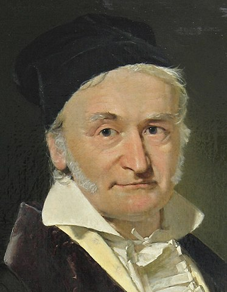

Philipe Godoy, aka JPG
Probabilidade não existe[*]

Antes de mudar completamente o futuro da matemática preciso definir um axioma.
[Axioma dos multiplos dedos], Supondo que certo individuo possua dois dedos é verdadeiro dizer também que ele possui um dedo, pois quem possui dois dedos possui um.
[Teorema: Probabilidade não existe], com o axioma anterior e seguindo o mesmo raciocinio
vamos dizer que a chance de algo acontecer é muito provavel, dessa forma podemos inferir que essa coisa
também é pouco provavel, pois quando se tem muitos também se tem poucos.
Usando a mesma linha de pensamento porém considerando que a chance de algo acontecer é uma medida de 'vazio', isto é, quanto mais provavel menos 'coisa' teremos, temos que quando evento possui baixa probabilidade
de acontecer ele possui muita (pensando igual o paragrafo anterior porém de maneira inversa).
Provando assim como gostariamos.
[*] É bem provavel que esse texto seja uma tentativa de piada.